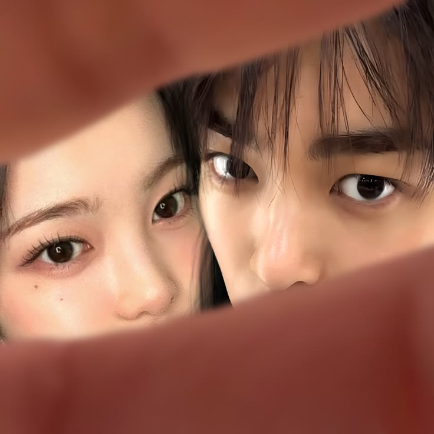
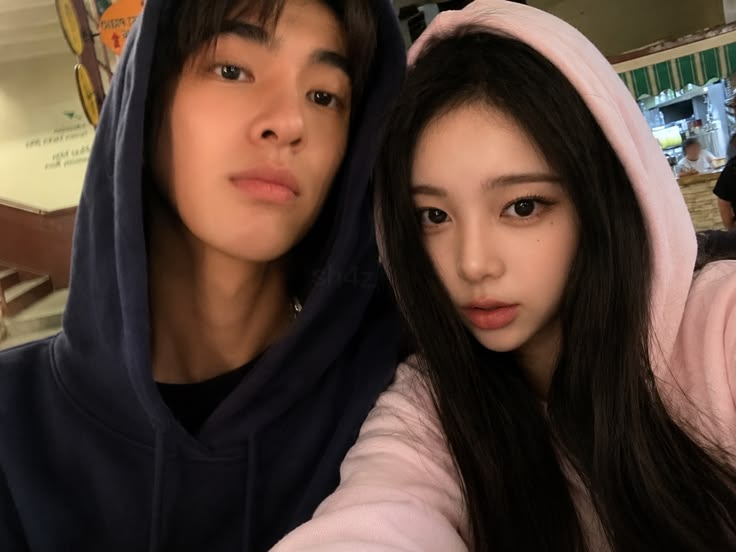
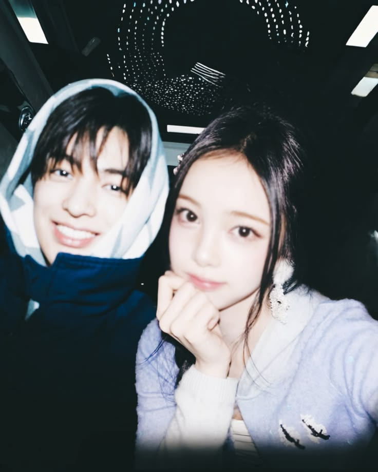

𝔃𝓲𝔃𝓸𝔂 ♡
for 𝒵𝐼𝒵𝒪𝒴 ‹𝟹
about 𝐻𝑒𝓇
zizoy's someone who makes ordinary days feel special. her smile, kindness, and presence have a way of making everything feel a little brighter. zizoy is someone who makes ordinary days feel special. her smile, kindness, and presence have a way of making everything feel a little brighter. she may not realize it, but the little things she does, the way she laughs, the way she talks, and the way she cares about people mean so much to me. being with her has given me so many memories that i'll always cherish. from the simplest conversations to the moments we'll probably laugh about years later, every memory with her holds a special place in my heart. this little website is dedicated to her, not because a website could ever fully describe how amazing she is, but because i wanted to create something that reminds her of how loved, appreciated, and special she truly is.e may not realize it, but the little things she does, the way she laughs, the way she talks, and the way she cares about people mean so much to me. being with her has given me so many memories that i'll always cherish. from the simplest conversations to the moments we'll probably laugh about years later, every memory with her holds a special place in my heart. this little website is dedicated to her, not because a website could ever fully describe how amazing she is, but because i wanted to create something that reminds her of how loved, appreciated, and special she truly is.
Her Favorites
our memories



cutie pie
our memories ♡
gorgeous girl in the world i've ever seen :b
things i 𝓁𝑜𝓋𝑒 about u
♡ ur laugh
♡ ur kindness
♡ ur voice
♡ the way u care
♡ everything that makes u, u